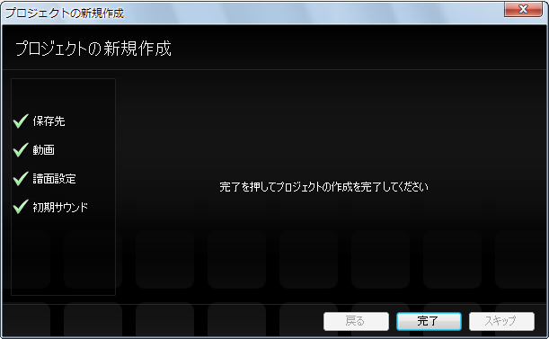
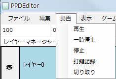

First, prepare the movie you want to use. (Here we call it movie.mp4)
Start PPDEditor and select File → Open → New Project.

The New Project dialog appears. Follow the dialog to set up the project.
First, select the folder to save the project in. Usually the default is fine, so just press the Next button.

Next, select the movie to use.
Press the Change button to open a dialog, go to the folder where movie.mp4 is saved, select movie.mp4 and press OK.


Next, set the score's name and profile.
Enter the song's name as the score's name (add something more descriptive if you have it).
For the score's profile, select AC if you want an AC-style score. (If you don't know what AC is, Normal is fine.)
(※You can change these after creating the project)

Next, set the initial sound.
Usually the sound shown by default (a tambourine sound) is fine.
(※You can change it after creating the project)

Press the Done button.

Let's try playing and pausing the movie.
First, focus the timeline (or the game window). It turns gray when it is focused.

While the timeline (or the game window) is focused, press the Space key
to toggle between play and pause.
You can also play, pause and stop from the menu bar.

Next, do the initial setting of the score.
Next